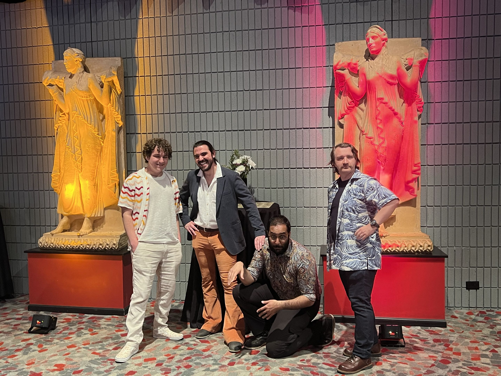

Bridging computer science, social dynamics, narrative, and performance at UC Davis.
The Social Intelligence, Narrative, and Games (SING) lab at the University of California, Davis, integrates the fields of social sciences, narrative theory, game studies, and sociology to advance our understanding of the dynamics at play between storytelling, game mechanics, social cognition, and social physics systems. The SING Lab investigates how narratives and games not only reflect but also influence social structures, behaviors, and gameplay systems. By incorporating insights from sociology, the lab explores how societal norms and behaviors are modeled and impacted by interactive media. Through a combination of theoretical research, practical experimentation, and game creation, the SING lab aims to leverage these insights for innovative applications in education, entertainment, and policy, with the goal of utilizing narrative and game-based approaches to open new design spaces and further our understanding of how artificial intelligence systems are founded.

Focusing on the computational authoring of complex narratives, creating systems that autonomously generate compelling dramatic arcs, dynamic plotlines, and deeply expressive story worlds.
Bridging computer science and the performing arts by developing systems that model stagecraft and seek to enable human-like artistic performances in virtual spaces.
Modeling Social Dynamics
Exploring how artificial agents can perceive, reason about, and participate in complex social interactions within digital environments.